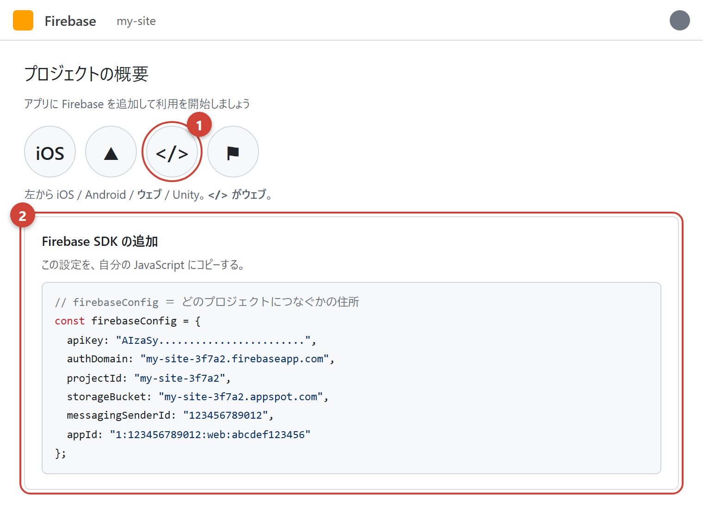
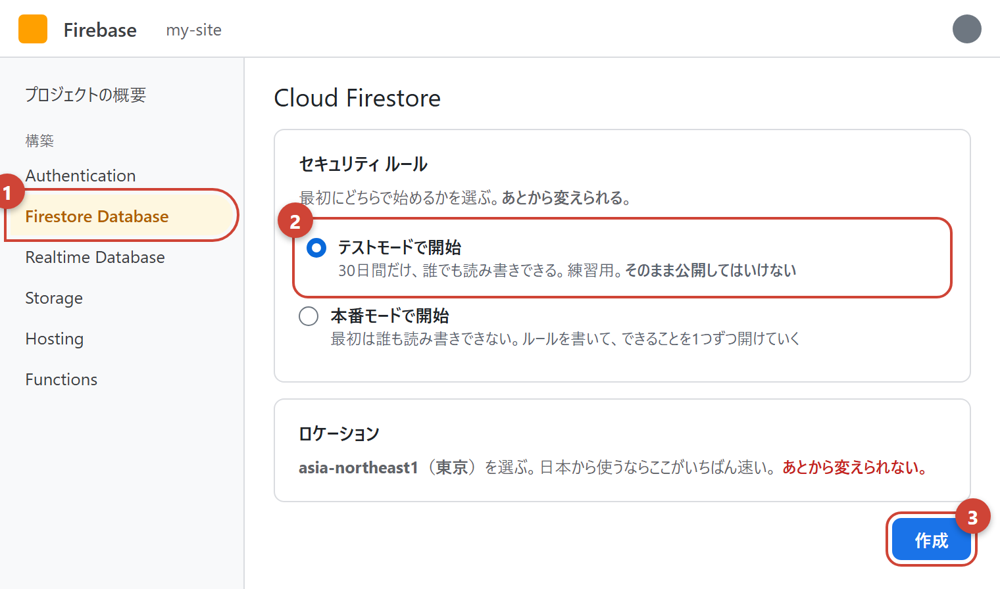
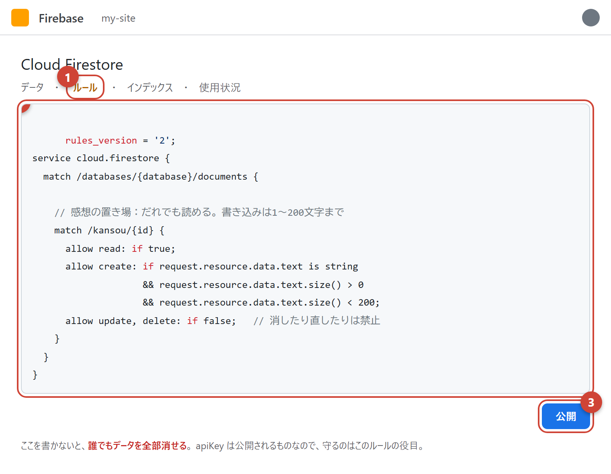

もくじ ／ 資料
Firebase の使い方
「みんなで同じものを見る」を作るための道具。
感想を書いてもらう・スコアを集める・ログインさせる。
サーバーを自分で用意しなくていいのがいちばんの価値。
管理画面の絵は実際の画面に合わせて描いたもの（本物はログインしないと見られず、
写真にするとアカウント名が写るため）。ボタンの名前と場所は本物と同じ。
なぜ要るのか
| やりたいこと | 要るもの | 理由 |
|---|---|---|
| 自分の記録を残す | localStorage（DAY 6） | 自分のブラウザの中だけでいいなら、これで足りる |
| 他の人に感想を書いてもらう | Firebase | 書いた内容をみんなが見られる場所に置く必要がある |
| みんなのスコアを集める | Firebase | 同上 |
| ログイン | Firebase Authentication | 「誰が書いたか」を確かめる仕組みが要る |
順番を守る
サイトが完全に動くようになってから手をつける。
動いていない状態で足すと、「HTMLが悪いのか Firebase が悪いのか」が分からなくなって、
ほぼ必ず詰まる。
何ができるか
| 名前 | 何をするもの |
|---|---|
| Firestore よく使う |
データの置き場。感想・スコア・投稿など。このページで扱うのはこれ |
| Hosting | サイトの公開。公開するのページ の B |
| Authentication | ログイン。Google・メール・電話番号などで |
| Storage | 画像や動画のアップロード先 |
| Realtime Database | Firestore の古いほう。今から作るなら Firestore でいい |
1
つなぐまで
プロジェクトを作る
console.firebase.google.com → Googleアカウントでログイン → プロジェクトを追加。

① 名前を英数字で ② アナリティクスはオフのまま 続行
ウェブアプリを足して、設定をもらう
プロジェクトの画面で </> のアイコンを押す。アプリ名を入れて登録すると、設定が出てくる。

① </> がウェブ用（iOS や Android ではない）
② ここに出る
firebaseConfig を、まるごとコピーして自分のJSに貼る
自分のページにつなぐ
index.html の script タグに type="module" を付ける。これが要る。
script.js の先頭。
12.19.0 の部分は変わる
Firebase は更新が早い。うまく動かないときは、
管理画面に出ていた番号に合わせる。数字を揃えていれば動く。
type="module" を忘れると動かない
import は module でしか使えない。
「Cannot use import statement outside a module」と
Console に出たら、これが原因。
2
置き場を作る

① 左メニューの Firestore Database → 「データベースの作成」
② 練習中はテストモード（30日で切れる）
③ ロケーションは asia-northeast1（東京）。
これだけは後から変えられない
言葉
| Firestore の言い方 | ふつうに言うと |
|---|---|
| コレクション | フォルダ。例：kansou（感想ぜんぶ） |
| ドキュメント | その中の1件。例：1つの感想 |
| フィールド | 1件の中の項目。例：text name createdAt |
JavaScript でいうと、コレクション＝配列、ドキュメント＝その中のオブジェクト、と思っておけばいい。
3
ルールで守る
ここがいちばん大事
テストモードのまま公開すると、誰でもデータを全部消せる。
実際に、荒らされて全部消えたサイトはいくらでもある。
公開する前に必ずルールを書く。

① Firestore の上のタブ ルール
② ここに書く ③ 公開 を押すと効く（すぐ効く）
意味
| 書いたこと | 意味 |
|---|---|
allow read: if true; | 誰でも読める。感想を表示したいので必要 |
allow create: if … | 条件を満たすときだけ新しく書ける |
text.size() < 200 | 200文字未満だけ。 長文を大量に送りつけられるのを防ぐ |
allow update, delete: if false; |
書き換えと削除は誰にもさせない。荒らし対策としていちばん効く |
apiKey は秘密ではない
firebaseConfig は見られて当たり前のもの。
隠す必要はないし、隠せない（JSに書いた時点で全員から読める）。
守るのはルールの役目。ここを混同すると、ずっと不安なまま作ることになる。
4
書く・読む
書き込む（1件足す）
読み込む（新しい順に全部）
フォームにつなぐ
await が付く理由
ネットの向こうまで取りに行くので、返事が返るまで時間がかかる。
await は「返事を待ってから次へ進む」という意味。
await を使う関数には async を付ける。セットで覚える。
よくある詰まり
| Console に出るもの | 原因 |
|---|---|
Missing or insufficient permissions |
ルールで弾かれている。いちばん多い。ルールの条件と、送っているデータの形が合っているか |
Cannot use import statement outside a module |
script タグの type="module" 忘れ |
Failed to load resource（gstatic） |
バージョン番号の打ち間違い、またはネットにつながっていない |
| 何も起きない・エラーも出ない | await や async の付け忘れ。
.then() と混ぜていないか |
お金の話
| 無料プラン（Spark） | |
|---|---|
| Firestore の読み取り | 1日 50,000 回まで |
| Firestore の書き込み | 1日 20,000 回まで |
| Hosting | 保存 10GB／転送 1日 360MB |
個人のサイトなら、まず超えない
1日に5万回読まれるというのは、かなりの人気サイト。
そしてクレジットカードを登録しなければ、勝手に課金されることはない
（上限に当たると止まるだけ）。登録しないまま使うのが安全。
ただし「無限ループ」には注意
読み込みを繰り返す書き方をしてしまうと、
一晩で無料枠を使い切ることがある。
onSnapshot の中でまた読み直す、のような形になっていないか確かめる。
いつ使うか・使わないか
使うといい
・感想やコメントを他の人に書いてもらう
・スコアのランキング
・複数の端末から同じものを見たい
・ログインが要る
・スコアのランキング
・複数の端末から同じものを見たい
・ログインが要る
使わなくていい
・自分の記録だけ → localStorage で十分
・見せるだけのサイト → 要らない
・練習中 → 先にサイトを完成させる
・見せるだけのサイト → 要らない
・練習中 → 先にサイトを完成させる
ここまで来たら、もう自走できる
Firebase は公式のドキュメントとサンプルが多い。
DAY 7 でやった型（イメージ → 機能 → 必要なもの → 流れ → 実装）で進めれば、
新しい機能も同じやり方で身につく。
分からないところは 質問文メーカー で聞き方を作る。
← もくじに戻る